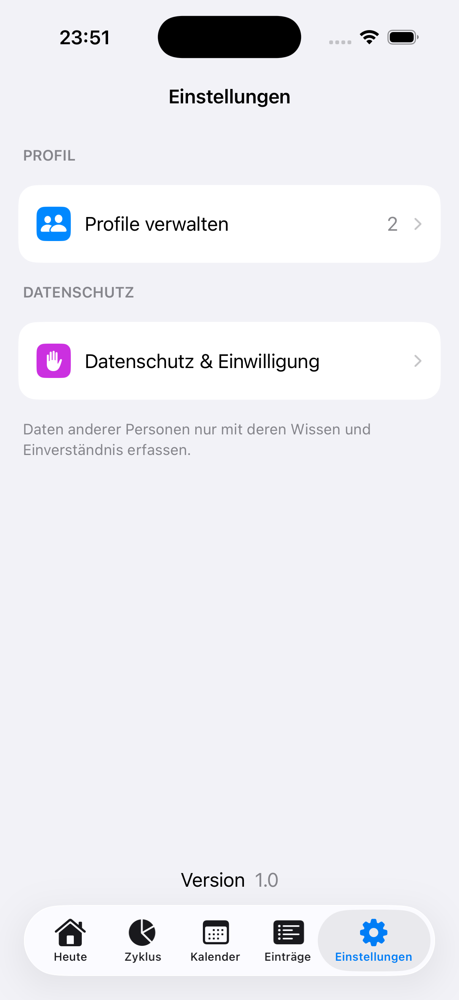
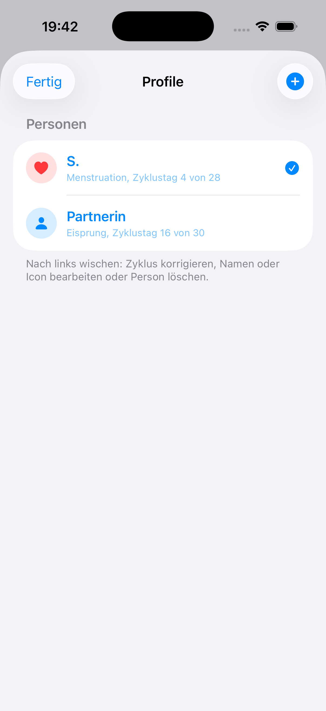
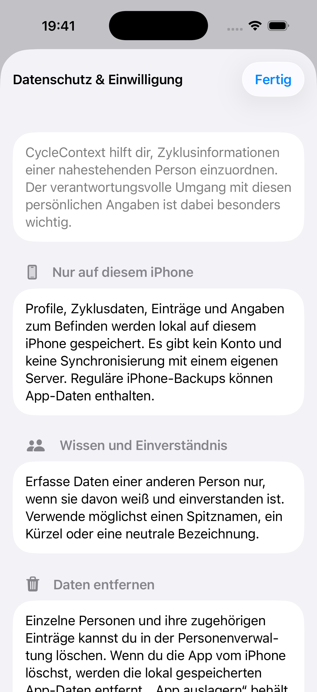

01
Heute auf einen Blick.
Zyklustag, aktueller Abschnitt und respektvolle Alltagshinweise in einer ruhigen Übersicht.
Cycle Context: Zyklus verstehen
Dokumentiere deinen eigenen Zyklus oder begleite eine nahestehende Person respektvoll – privat und lokal auf deinem iPhone.
Jetzt für iPhone und iPad im App Store.

Kein AccountDirekt loslegen
Lokale DatenAuf deinem Gerät
Klare SpracheOhne starre Schablonen
Heute verstehen
CycleContext übersetzt einen geschätzten Zyklusstand in verständlichen Kontext. Du siehst mögliche körperliche Veränderungen, Hinweise für den Alltag und kommende Abschnitte – ohne Gefühle oder Verhalten vorherzusagen.
Zyklustag, aktueller Abschnitt und respektvolle Alltagshinweise in einer ruhigen Übersicht.
Kommende Abschnitte ansehen und die kalendarische Schätzung bei Bedarf korrigieren.
Persönliche Beobachtungen und offen geäußerte Bedürfnisse haben immer Vorrang.
Orientierung statt Schablonen
Die App erklärt mögliche Zusammenhänge. Sie sagt nicht voraus, wie sich eine Person fühlen oder verhalten wird.
Blutung, mögliche Beschwerden und Regeneration.
Follikelreifung und mögliche neue Energie.
Eine vorsichtige kalendarische Schätzung.
Progesteron steigt und der Körper verändert sich.
Beschwerden einordnen, ohne sie vorauszusetzen.
Persönliche Beobachtung
Dokumentiere Blutungsstärke, Schmerzen, Energie, Unterstützungswünsche und optionale Notizen. Kalenderbasierte Orientierung und persönliche Einträge bleiben klar unterscheidbar.


Privat by Design
Profile, Zyklusdaten und Einträge werden in der aktuellen Version lokal gespeichert. Es gibt keinen Account und keine Synchronisierung mit einem eigenen Server.

In Ruhe kennenlernen
Ohne Zahlungsangabe. Die sieben Tage beginnen erst, wenn du in der App bewusst auf den Testbutton tippst.
Lade CycleContext auf dein iPhone oder iPad und probiere die App aus.
Wissenschaftlich vorsichtig
CycleContext dient der allgemeinen Information, persönlichen Dokumentation und Alltagsorientierung. Die App ist nicht für Diagnose, Behandlung, Verhütung oder Fruchtbarkeitsbestimmung bestimmt. Bei starken, ungewöhnlichen oder anhaltenden Beschwerden sollte medizinischer Rat eingeholt werden.
Häufige Fragen
Nein. Du kannst deinen eigenen Zyklus dokumentieren oder eine nahestehende Person respektvoll begleiten.
Nein. Die App bietet kalendarische Orientierung und allgemeine Informationen. Das tatsächliche Befinden und persönliche Beobachtungen haben Vorrang.
In der aktuellen Version bleiben Profile, Zyklusdaten und Einträge lokal auf deinem Gerät. Es gibt keinen Account und keinen eigenen Server-Sync.
Nein. Das Eisprungfenster ist nur eine kalendarische Schätzung. Die App ist nicht zur Verhütung oder Fruchtbarkeitsbestimmung geeignet.